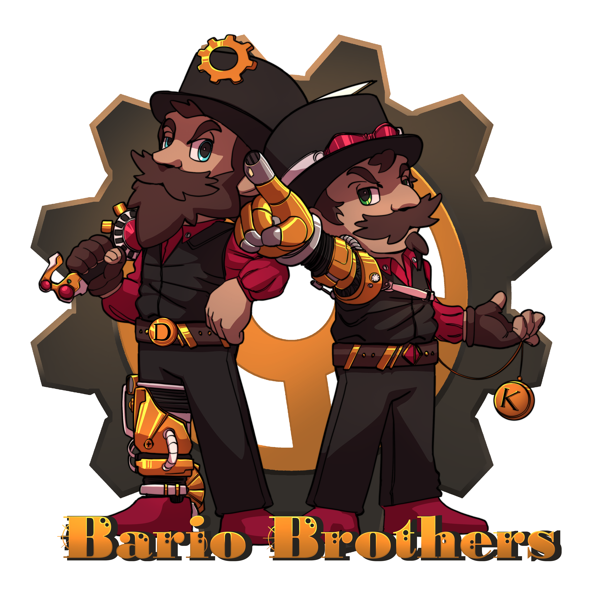

Welcome to Super Bario Brothers project
Welcome to our extraordinary world where the realms of gaming, anime, and movies converge in a stunning Steampunk-themed bar!
What began as a vision between two brothers, Krisztofer and David, has blossomed into an immersive experience where innovation meets mixology.
Drawing from David's extensive expertise as a seasoned head bartender with 11 years of crafting drinks across England and various
global destinations,
our cocktails are a fusion of imagination, inspired by our favorite realms and intertwined with the allure of Steampunk aesthetics.
While David orchestrates the symphony of flavors at the bar, Krisztofer, the younger sibling, brings his managerial finesse honed in desert
locales, steering the ship with precision in operations, staff training, and service excellence. His prowess extends to the technical
facets, handling IT, electrical systems, and the architectural marvels that adorn our space.
Embark with us on this thrilling journey that transcends the ordinary.
We're set to launch this passion project through Kickstarter, inviting you to be part of our dream turned reality.
Join us in bringing this one-of-a-kind vision to life, where every drink, every moment, and every interaction is steeped in the magic of gaming, anime,
movies, and the captivating allure of Steampunk. Cheers to innovation, creativity, and an unforgettable experience!
Purpose of the Page
Help shape our vision by sharing your thoughts and ideas. Your input will craft the final concept we'll bring to Kickstarter.
Sign up, share your opinions, and be the first to know when we launch our campaign!
Click here to visit the original Kickstarter home page
or
here to read more about it on wikipedia!
What is Steampunk?
( Click on each highlighted word to read more about the topic on Wikipedia )
Steampunk
is a captivating and imaginative genre that blends elements of
science fiction
,
fantasy
, and
historical fiction.
It's often characterized by its unique aesthetic, which merges the technology and fashion of the
Victorian era with
steam-powered machinery,
alternate histories, and futuristic innovations.
At its core, steampunk offers a mesmerizing reimagining of the past, envisioning a world where steam power remains the dominant form of technology,
leading to fantastical inventions like steam-driven airships, intricate clockwork mechanisms, and brass gadgets that defy the limitations of the era.
See You Later
Enjoy the rest of the content on the page. See you later on on our Kickstarter page or maybe on our our opening,